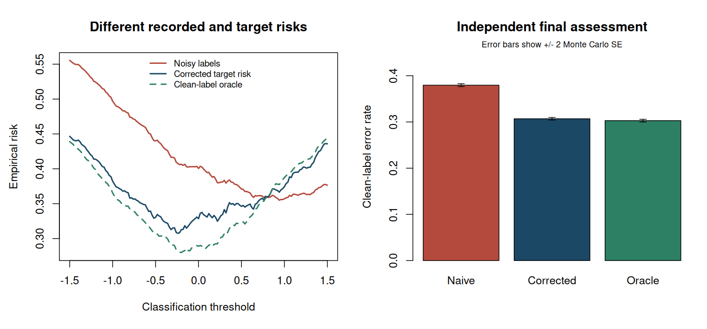

2. What weak supervision tells us#
Topics of Statistical Learning · Week 2
Record the observation, not an imagined complete label#
Weak supervision describes several observation settings, not one interchangeable data type. A missing label, a wrong label, a candidate set, and a label attached to a group contain different information. A useful analysis writes down the relationship between the scientific target and the recorded information before choosing an algorithm.
Let \(Y\) be the target class and let \(O\) denote the recorded supervision. A mechanism \(P(O\mid X,Y)\) connects them. The observed-data distribution is
Learning from \((X,O)\) requires enough information about this mechanism and the latent distribution to identify the intended target. Specifying a flexible neural network or a more powerful optimizer does not supply that missing information. This chapter develops class-conditional label noise as a worked mechanism and uses it to compare other forms of weak supervision.
A map of observation settings#
Setting |
What is observed? |
An essential modelling question |
|---|---|---|
Positive–unlabelled |
Some confirmed positives and unlabelled features |
How are positives selected, and what population does the unlabelled sample represent? |
Noisy labels |
A possibly incorrect label \(\widetilde Y\) |
Which classes can be confused, and does confusion depend on \(X\)? |
Partial labels |
A candidate set \(C\) |
Is \(Y\in C\) guaranteed, and how is the set generated? |
Complementary labels |
A class \(\overline Y\) that is excluded |
How is the excluded class chosen? |
Bag-level labels |
A label for a collection of observations |
How does the group label depend on instance labels? |
Multiple weak sources |
Several labels or abstentions |
Which sources share errors or information? |
The terminology does not determine the assumptions. For example, a bag labelled positive might mean “at least one positive instance,” “a majority are positive,” or an aggregate outcome with a different interpretation. These lead to different likelihoods and targets. Likewise, semi-supervised learning with labelled examples from both classes is a different sampling problem from having only labelled positives.
Class-conditional label noise#
Let \(Y\in\{+1,-1\}\) and suppose the recorded label \(\widetilde Y\) can be flipped. Define
The class-conditional assumption means that these probabilities do not additionally depend on \(X\) once \(Y\) is given. With rows indexed by the true class and columns by the recorded class, the transition matrix is
Writing \(\eta(x)=P(Y=+1\mid X=x)\) gives
If the noise rates are known and \(d=1-\rho_+-\rho_-\ne0\), the relation can be inverted. The usual informative-noise setting takes \(d>0\). When \(d=0\), the recorded-label probability is constant in \(\eta\), so this observation cannot identify the class posterior. When \(|d|\) is small, inversion amplifies estimation errors. Unknown transition probabilities require additional assumptions or information; observing noisy labels alone does not automatically identify them.
Worked example 2.1 — Noise can move the classification threshold
Take \(\rho_+=0.2\) and \(\rho_-=0.1\). Then \(\widetilde\eta(x)=0.1+0.7\eta(x)\). Thresholding the recorded-label probability at \(0.5\) is equivalent to thresholding the true posterior at \(4/7\approx0.5714\).
For an observation with \(\eta(x)=0.55\), the true equal-cost Bayes decision is positive. Its recorded-label probability is only \(0.485\), so a well-fitted model for the noisy labels, used with the usual \(0.5\) threshold, makes the opposite decision. Accurate prediction of the observed label and accurate prediction of the target label are different tasks.
With known noise rates, inversion recovers \(\eta=(\widetilde\eta-0.1)/0.7\). In finite samples, a fitted \(\widetilde\eta\) can produce values outside \([0,1]\) after inversion; clipping is a modelling or estimation choice, not an exact unbiased transformation.
Correcting the loss instead of the posterior#
For a fixed feature value and prediction, collect the clean losses in \(L=(\ell_+,\ell_-)^\mathsf T\), where \(\ell_\pm=\ell(g(X),\pm1)\). We seek recorded-label losses \(\widetilde L\) satisfying \(T\widetilde L=L\). Solving this system gives
Under the stated mechanism,
Taking expectations therefore recovers the clean population risk. This is an expectation identity for a fixed prediction rule. It does not say that each corrected observation is a plausible individual loss, or that unrestricted minimization cannot overfit.
For the rates in Example 2.1, consider a rule predicting positive. Its clean losses are \((0,1)\). The corrected losses are \(-2/7\) for an observed positive and \(8/7\) for an observed negative. Averaging over corruption gives zero when the true class is positive and one when it is negative. Negative contributions are the algebraic cost of undoing a mixture, a phenomenon that will reappear in PU learning.
Candidate sets and complementary labels#
A partial label supplies a set of possible classes. If every observation has candidate set \(\{A,B\}\), that fact alone cannot distinguish \(A\) from \(B\). A method must obtain information from the features, variation in candidate sets, restrictions on their generation, or additional data.
A complementary label excludes one class. In binary classification, a correct excluded label determines the other class exactly. To illustrate genuinely weaker information, use at least three classes.
Worked example 2.2 — A three-class complementary label
Suppose \(Y\in\{A,B,C\}\) and \(\overline Y\) is drawn uniformly from the two incorrect classes. For arbitrary class-specific losses,
has conditional expectation \(\ell(g,Y)\). The expectation subtracts the sum of the two incorrect-class losses from the sum over all classes.
Under zero–one loss, a rule predicting \(A\) has corrected loss \(2\mathbf1\{\overline Y=A\}\). If the true class is \(B\), the excluded label is \(A\) or \(C\) with equal probability, so the expected corrected loss is one. If the true class is \(A\), the excluded label is never \(A\), so the expected corrected loss is zero.
Uniform complementary-label sampling is doing essential work. If a label provider systematically favours one incorrect class, this formula need not remain unbiased.
Several weak sources and the evaluation sample#
Multiple sources can supply useful supervision, but source count is not the same as independent information. Two rules based on the same keyword may repeat the same mistake. Abstention can also depend on difficulty or class. A probabilistic aggregation model must state enough assumptions to identify source reliability and its target labels.
Keep the evaluation problem explicit. A clean, independently collected test sample can assess prediction of \(Y\). A noisy test label assesses prediction of \(\widetilde Y\) unless a justified correction is applied. Comparing algorithms only against the same weak source used for training may reward reproduction of that source’s bias.
R laboratory — Correcting a noisy risk curve#
The lab simulates a logistic class posterior and asymmetric class-conditional corruption with known rates. It evaluates a grid of threshold classifiers using noisy empirical risk and corrected empirical risk. A large independent labelled sample assesses the selected rules. The latent training labels are used only for an explicitly labelled oracle comparison.
The grid is deliberately simple: the aim is to inspect an observation mechanism rather than hide it inside an optimization routine. The script also checks the transition-matrix inversion and the complementary-label identity directly.
Code
# Topics of Statistical Learning
# Lab 02: Class-conditional noise and corrected empirical risk
# Base R only. Run with: Rscript 02-weak-supervision.R
set.seed(2026102102)
n_train <- 2000L
n_test <- 100000L
rho_positive <- 0.30
rho_negative <- 0.10
d <- 1 - rho_positive - rho_negative
stopifnot(d > 0)
transition <- rbind(c(1 - rho_positive, rho_positive),
c(rho_negative, 1 - rho_negative))
dimnames(transition) <- list(true = c("positive", "negative"),
recorded = c("positive", "negative"))
x <- rnorm(n_train)
y <- rbinom(n_train, 1L, plogis(1.2 * x))
flip_probability <- ifelse(y == 1L, rho_positive, rho_negative)
flipped <- runif(n_train) < flip_probability
y_recorded <- ifelse(flipped, 1L - y, y)
thresholds <- seq(-1.5, 1.5, length.out = 151L)
curves <- t(vapply(thresholds, function(threshold) {
prediction <- as.integer(x > threshold)
loss_positive <- 1 - prediction
loss_negative <- prediction
corrected_positive <- ((1 - rho_negative) * loss_positive -
rho_positive * loss_negative) / d
corrected_negative <- ((1 - rho_positive) * loss_negative -
rho_negative * loss_positive) / d
corrected <- ifelse(y_recorded == 1L, corrected_positive, corrected_negative)
c(noisy_risk = mean(prediction != y_recorded),
corrected_risk = mean(corrected),
oracle_clean_risk = mean(prediction != y))
}, numeric(3L)))
selected <- apply(curves, 2L, which.min)
x_test <- rnorm(n_test)
y_test <- rbinom(n_test, 1L, plogis(1.2 * x_test))
assessment <- do.call(rbind, lapply(seq_along(selected), function(j) {
threshold <- thresholds[selected[j]]
errors <- as.numeric((x_test > threshold) != y_test)
data.frame(method = colnames(curves)[j], threshold = threshold,
held_out_error = mean(errors),
held_out_MCSE = sd(errors) / sqrt(n_test))
}))
cat("Known class-conditional transition matrix:\n")
print(transition)
cat("\nThresholds selected using each training criterion:\n")
print(assessment, digits = 5, row.names = FALSE)
cat("\nThe oracle clean criterion uses hidden training labels only as a benchmark.\n")
cat("Held-out labels are used for assessment, never threshold selection.\n")
# Identity check for the rule that always predicts positive.
clean_losses <- c(0, 1)
corrected_losses <- drop(solve(transition, clean_losses))
recovered <- drop(transition %*% corrected_losses)
cat("\nCorrected losses for a positive decision:\n")
print(data.frame(recorded_label = c("positive", "negative"),
corrected_loss = corrected_losses), row.names = FALSE)
cat("Recovered expected losses conditional on the true class:\n")
print(recovered)
# Three-class example: uniform complementary labels and prediction of class A.
classes <- c("A", "B", "C")
complement_result <- vapply(classes, function(true_class) {
possible_complements <- setdiff(classes, true_class)
mean(2 * (possible_complements == "A"))
}, numeric(1L))
cat("\nComplementary-label corrected risk for a prediction of A:\n")
print(data.frame(true_class = classes,
expected_corrected_loss = complement_result), row.names = FALSE)
figure_dir <- Sys.getenv("COURSE_FIGURE_DIR", unset = "")
if (nzchar(figure_dir)) {
dir.create(figure_dir, recursive = TRUE, showWarnings = FALSE)
png(file.path(figure_dir, "02-weak-supervision.png"), width = 1500,
height = 700, res = 140, type = "cairo")
par(mfrow = c(1, 2), mar = c(5.2, 4.5, 4.0, 1.2))
colours <- c("#B44A3D", "#1B4965", "#2D8063")
matplot(thresholds, curves, type = "l", lty = c(1, 1, 2), lwd = 2,
col = colours, xlab = "Classification threshold", ylab = "Empirical risk",
main = "Different recorded and target risks")
legend("top", c("Noisy labels", "Corrected target risk", "Clean-label oracle"),
col = colours, lty = c(1, 1, 2), lwd = 2, bty = "n", cex = 0.8)
positions <- barplot(assessment$held_out_error, names.arg = c("Naive", "Corrected", "Oracle"),
col = colours, ylim = c(0, 0.45), ylab = "Clean-label error rate",
main = "Independent final assessment")
arrows(positions, assessment$held_out_error - 2 * assessment$held_out_MCSE,
positions, assessment$held_out_error + 2 * assessment$held_out_MCSE,
angle = 90, code = 3, length = 0.05)
mtext("Error bars show +/- 2 Monte Carlo SE", side = 3, line = 0.2, cex = 0.75)
invisible(dev.off())
}
stopifnot(max(abs(recovered - clean_losses)) < 1e-12,
identical(as.numeric(complement_result), c(0, 1, 1)),
all(is.finite(curves)))
Executed laboratory output#
Output
Known class-conditional transition matrix:
recorded
true positive negative
positive 0.7 0.3
negative 0.1 0.9
Thresholds selected using each training criterion:
method threshold held_out_error held_out_MCSE
noisy_risk 0.94 0.37952 0.0015346
corrected_risk -0.24 0.30695 0.0014585
oracle_clean_risk -0.14 0.30293 0.0014532
The oracle clean criterion uses hidden training labels only as a benchmark.
Held-out labels are used for assessment, never threshold selection.
Corrected losses for a positive decision:
recorded_label corrected_loss
positive -0.500000
negative 1.166667
Recovered expected losses conditional on the true class:
positive negative
0 1
Complementary-label corrected risk for a prediction of A:
true_class expected_corrected_loss
A 0
B 1
C 1


Exercises#
Derive \(\widetilde\eta(x)\) by conditioning on \(Y\). What happens if both noise rates equal \(1/2\)?
Verify the two corrected losses by multiplying \(T\widetilde L\). Why can their variance increase as \(d\) approaches zero?
A three-class annotator always reports the first incorrect class alphabetically. Does the uniform complementary-label correction remain justified?
Modify the laboratory so the positive flip probability depends on \(X\). Explain why using one global positive flip rate is not generally sufficient.
Worked solutions
1. The law of total probability gives \((1-\rho_+)\eta+\rho_-(1-\eta)\). If both rates are \(1/2\), the observed label is a fair coin independent of the true class under this mechanism.
2. Substitution cancels the cross-loss terms and returns \((\ell_+,\ell_-)\). The correction coefficients contain \(1/d\); fluctuations in empirical averages can therefore be amplified. Particular losses can have cancellations, so this is a stability warning rather than a claim of divergence in every possible special case.
3. No. The conditional probabilities of the excluded classes are no longer uniform. The observation mechanism must be modelled with its actual transition probabilities, and its ability to identify the target must be checked.
4. The relevant identity is conditional on both \(X\) and \(Y\). A class-average flip rate does not usually preserve it when losses and corruption probabilities vary together with features. Use known feature-dependent transitions, impose additional structure, or describe the resulting misspecification; a larger sample alone does not restore the original identity.
Primary readings#
Natarajan et al. (2013), “Learning with Noisy Labels”: class-conditional corruption and loss correction.
Ishida et al. (2019), “Complementary-Label Learning for Arbitrary Losses and Models”: risk rewriting for excluded labels.
Ratner et al. (2016), “Data Programming: Creating Large Training Sets, Quickly”: learning from several weak labelling functions.
Next: Chapters 3 and 4 study the missing-label mechanism specific to positive–unlabelled learning.